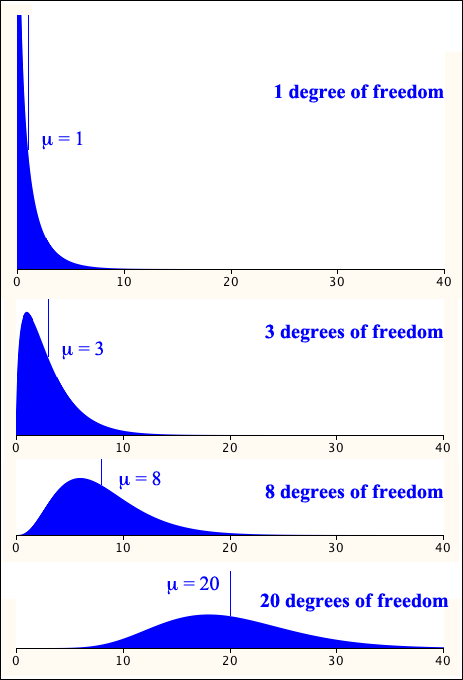

The mean and variance of a \(\ChiSqrDistn(k\;\text{df})\) random variable can be found from its equivalence to a Gamma distribution.
Mean and variance
If \(Y \sim \ChiSqrDistn(k\;\text{df})\), its mean and variance are
\[ E[Y] = k \spaced{and} \Var(Y) = 2k\](Proved in full version)
Shape of the distribution
The \(\ChiSqrDistn(k\;\text{df})\) distribution is skew with a longer tail to the right. However since
\[ Y = \sum_{i=1}^k {Z_i^2} \]where the \(\{Z_i^2\}\) are independent \(\ChiSqrDistn(1)\) random variables, the Central Limit Theorem shows that the distribution approaches the shape of a Normal distribution as \(k \to \infty\).
